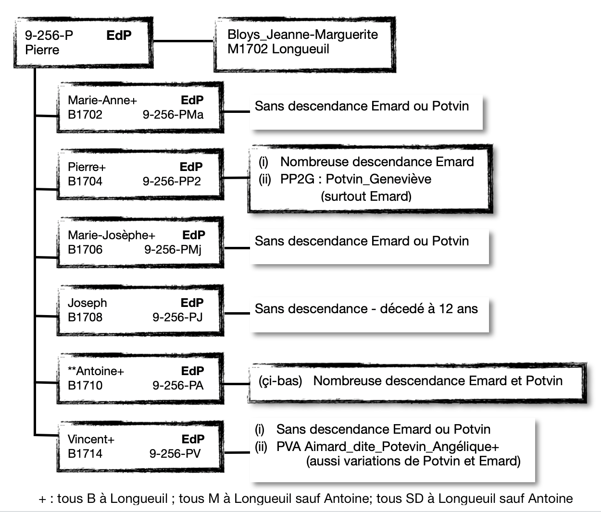
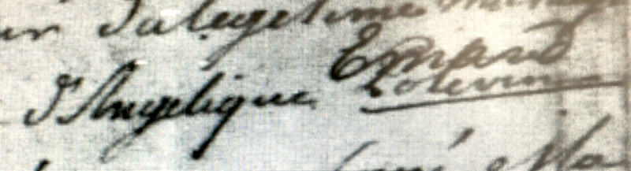
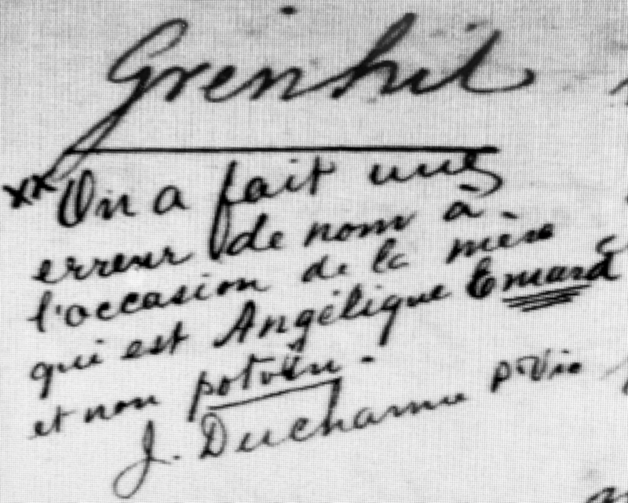
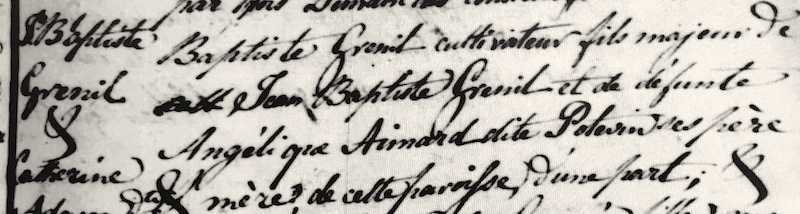
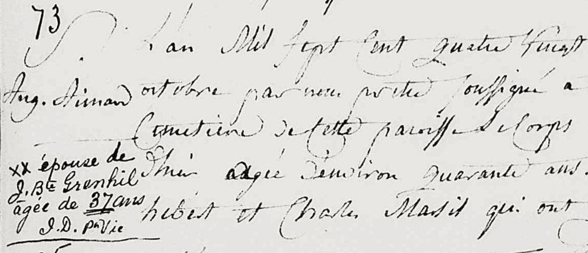
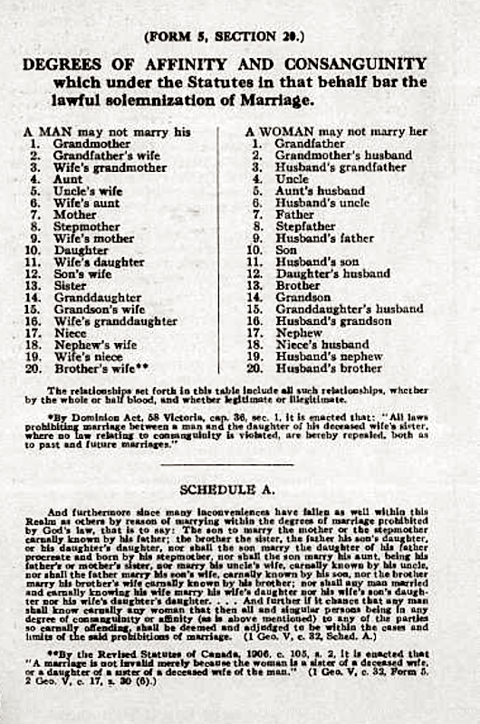

Warning : Variations of spelling are listed on the main page [GP3_TODO_link]. In this section, the normalized spelling "Emard" and "Potvin" will be used except in the specific exemples or citations from primary sources.
WHY THIS PAGE?
Les descendants de Saint Louis sont tous les descendants en ligne masculine et féminine,
I wanted to know who kept Emard and who kept Potvin as family last names. After one year of research, I now realize the scope is much too big.
This page will focus on any Emard-dit-Potvin or Potvin entries found during the research and any observations or additional thoughts based on the data.
The Researched EdP Genealogy Trees page provides a more detailed view of individual family units, dates and general locations. Future project will be to tie both pages to an online tool that will provide more flexible viewing options re. location / date / family-link.
MORE TO DO... LATER
Goal for a female descendant : check her records and her children's BMS. Stop.
Goal for a male descendant : check his records and his children's BMS and records. Continue down the line where possible.
Goal for a specific parish / location : go through the records and find any patterns re. priest entries, local traditions, etc. This quickly became an out-of-scope piece and left for future research.
Goal : go through the records of specific parish in case of mistakes.
Goal : go through the records to find all family BMS entries. Again scope much too large past 4th or 5th generation, especially when it became clear that Pierre's line was growing fast and no obvious use of Potvin. Drop. Return to use PRDH to confirm current data.
TODO : PRDH : when does EMARD POTVIN end for INDIVIDU name? ex. Pierre+Ledoux_Justine -> Emard Potvin Ludger Alfred 1832Longueuil
9-256-P - Pionnier Emard_dit_Potvin_Pierre + Longueuil
EN : Pierre and Marguerite remained in Longueuil and from the evidence, he and his family were interchangeably named Emard and Potvin. The majority of Pierre and Marguerite's children also lived and raised families in Longueuil and are predominantly named Emard in the church registry entries, with only a few Potvin or Emard_dit(e)_Potvin entries. Only Antoine [9-256-PA] raised a family outside of Longueuil and he and his descendants were more often listed as Emard_dit_Potvin in the church registry books. His is the only [9-256-P*] line to have both Emard and Potvin named descendants.
In the first section, a list of general observations are provided to put the following tables into context. Few examples were found for the majority of Pierre+Marguerite's children and grandchildren so they are listed in the first table section. Antoine has a more complex relationship with the EdP research and the findings are documented in the second section of tables.
More detailed genealogy information : Researched EdP Genealogy Trees
Observations

- In Longueuil, comme d'ailleurs à LaPrairie, all Emard were descendants from our Pierre+Marguerite couple [9-258-P]. The main Potvin family seem to be descendants of Christophe Poitevin_dit_Cadien_dit_Cadieu_dit_Leparisien who married Marie-Josephte Viau in Longueuil in 1731. Over time it was likely easier to have a consistent family name to clarify the relationships. Aside : In 1810, his granddaughter Potvin_Josephte married Antoine's grandson [7-64-PAPAlex] EdP_Alexis.
- There were "DIT" entries in the Saint-Antoine, Longueuil parish registry books over the period of study [1698-1882+] but none for the 2nd generation/+ Emard line.[The latest EdP entry found was 1920s?xxx] Several historians suggest the use of DIT names significantly dropped over the last part of the 19th century.
- There were only a handful of examples of EdP or Potvin in both Pierre and Vincent's lines. However, it suggests that the Emard_dit_Potvin convention was known and likely used by all or most of the first and second generation siblings but quickly discarded in favor of the original family name Emard since no other examples have been found.
- It is likely that family members followed tradition by using either of these two legal names in familiar and formal settings but was not reflected in the church registry entries. Although there doesn't seem to be an obvious pattern, it is clear that the priest and local traditions had some influence on this matter as well as the person's origins.
- Roman Catholic convoluted mariage and consanguinity rules : (NB: BLOG 7 : Consanguinity Rules and Examples) : The church records were important as a tool to record and track family lineage whereby enforcing the [at the time] greater-than-4 degrees of consanguinity separation canon law. There were many attemps to normalize the data across the church and written reminders to priests regarding the required data for each entry. This could have had an influence on the recorded data.
ASIDE : http://www.vatican.va/archive/ENG1104/__P3Y.HTM : This is of course extremely simplified. Canon-law 1091§2 states up-to-and-including the fourth-degree. Special dispensation was required until the Ontario government rules introduced in 1908 which allowed first cousin marriages; the church officially reducing it to second cousins in 1917 and later further changes.
???IS THIS REQUIRED ? Already captured....or to be added to the NB section of the following tables. For exampe :
- Pierre jr [9-256-PP2] had many descendants and they remained in Longueuil or moved to nearby villages. Only 2 examples of 'Potvin' were found of his daugther Geneviève - and this in Montreal. Vincent also remained in Longueuil and only 2 instances for his youngest daughter Angélique was entered as Emard, Potvin or Emard_dite_Potvin in Longueuil. These two male-descendant cases show that the Emard_dit_Potvin convention was known and likely used by all or most of the first generation siblings and their children but quickly discarded in favor of the original family name Emard since no other examples have been found.
- Pierre's daughter Genevieve [9-256-PP2G] is a good example. She was born and married in Longueuil and documented in church registry entries as Emard. The marriage registry entry names her husband, a native of Laval, as Toussaint Aubry_dit_Thécle. Later in Laval, we find that he is "Aubry" and she is "Emard". Later still in Montreal, he is "Thécle" and she is named "Potvin".
- Vincent's daughter Angélique [9-256-PVA] is a unique example found in Longueuil's church registry books. She is sometimes listed as Emard, Potvin and Aimard_dite_Potevin. In c1888, roughly a hundred years later, the priest Joseph Ducharme writes in the margin that there had been an error and her family name should have been entered as Emard. [Although this is likely an interpretation of the time when 'DIT' names were on the wane.]
- Vital Emard is another interesting case. He is often listed as Emard in the church records of Embrun [need to validate this]
On page 19 of Forget/Auclair's "Histoire de St-Jacques d'Embrun book, there is a nod to Norbert Emard (Potvin) [xxx] who was certainly known as Norbert Potvin but otherwise does not reference any Emard_dit_Potvin in the genealogy section - unlike other families. Interestingly, on p40-41, he cites the previous 'curé' M. Fancoeur as thanking "..., Octave Duford, Edouard Blanchard et Vital Potvin" for all of their help. In many documents written "in the appropriate time", Vital is largely documented as Potvin and sometimes Emard. [GP3TODO-vitalhtml-link]
For example :
NB 1 : Longueuil, c'est Emard et variations. Au noce, Toussaint est nommée Aubry_dit_Thécle,natif de St-Martin, Laval.
NB 2 : St-Martin, il est connu comme Aubry.
NB 3 : St-Laurent, Montreal, il est connu comme Thécle.
NB 4 : St-Laurent, Mtl. En 1795, Genevieve est nommé deux fois Potvin. Pourquoi
In 1783, the pioneer Pierre's grand-daughter Angélique is listed several times as a Potvin at her children's baptisms.
TABLEAU : 9-256-P* : Emard / Emard_dit_Potvin / Potvin
| MARIAGE |
1702fév06 |
| ÉPOUSE | Bloys_Marie_Maguerite_Jeanne, veuve et 5 enfants Saint-Aubin |
| DATES NAIS. ENFANTS |
1702-1714 |
| ENFANTS +=marié |
(6) : Marie_Anne+, Pierre+, Marie_Josephe+, Joseph, **Antoine+, Vincent+ |
| ENDROITS |
Longueuil - 1B Notre-Dame-de-Montreal - 1M Boucherville |
| NOTE |
n/a |
| ID |
Détails |
NB |
| 9-256-P Pierre |
- 1714B - Longueuil - baptême de son fils Vincent Aymart_dit_Poitevin
- 1718S - Longueüil - "Marie Saint-Aubin, aagée de 23 ans, femme de Turquot_Pierre habitans de la Longue Pointe paroisse de Ville de Marie, décedée le jour precedent... chez Pierre Aimard dit Poitevin son beaupere habitans de cette paroisse en presence dudit Pierre Aimard dit Poitevin et de Michel Saint-Aubin, frère de la deffuncte, qui ont declaré ne savoir signer..." Aimard_dit_Poitevin
- 1720B - Longueuil - Pierre, "Beau-grand pere, et Jeanne Marguerite Beloys grand mere", sont parrains de Pierre-François Dumainne, enfant de Charlotte Saint-Aubin et Pierre Dumainne, de la paroisse de Ville Marie. L'enfant est né chez Pierre et J-M. Aimart_dit_Poitevin
- 1721S - Longueuil - sépulture de son fils Joseph, 12 ans Aimart_dit_Poitvin
- 1740 - Longueuil - Inventaire des biens mobilliers de la communauté de feu Pierre Aimard Poitevin et Margueritte Blois sa veuve. François Simonnet, notaire. CT #143. (marigot.ca) Aimard_Poitevin et Aimard_dit_Poitevin
|
Sources :
Longueuil : marigot.ca;
familysearch.org - accès aux registres digitales;
PRDH; |
| 9-256-P* (tous) |
À l'époque, change individu de la famille aurait été connu sous les noms Emard et Potvin |
DONE |
9-256-PP2 Pierre
-> 9-252-PP2G Geneviève |
- 1795B - Montréal (St-Laurent) - baptême de Thécle_Marie_Françoise. Potvin
- 1795S - Montréal (St-Laurent) - sépulture de Thécle_Marie_Françoise. Potvin
|
DONE |
| 9-256-PMj Marie-Josephe |
- 1766M - Montréal (Rivière-des-Prairies) - mariage de son fils Benoit_dit_Livernois_Pierre Potvin
- [1730-1787] - Contrat #22, Notaire Tailhandier - Benoit_dit_Livernois_Antoine + EdP_Marie_Josephe. Emard_dit_Poitevin
|
source : https://www.nosorigines.qc.ca/GenealogieQuebec.aspx?genealogie=Benoit_Antoine&pid=41823 |
| 9-256-PJ Joseph |
- 1721S - Longueuil - sépulture de Joseph, 12 ans Aimart_dit_Poitvin
|
|
**9-256-PA
8-128-PA : Antoine |
VOIR PROCHAIN TABLEAU |
|
9-256-PV Vincent
-> 9-256-PVA Angélique |
- 1783B - Longueuil - baptême de son fils Grenhil_Prisque Potevin
NB : v1888 : Jean Ducharme, prêtre-curé, a souligné le nom Potevin et écrit Emard.
- 1785B - Longueuil - baptême de sa fille Grenhil_Charlotte Potvin
NB : v1888, Jean Ducharme, prêtre curé a noté dans la marge : "On a fait une erreur de nom à l'occasion de la mère qui est Angélique Emard et non Potvin. [SR: Les Potvin de Longueuil sont surtout les Poitevin_ou_Potvin_dit_Cadien_dit_Cadieux_dit_Corbin. Voir 7-64-PAPP2Alex Josephte Potvin, femme d'Alexis.]
- 1786S - Longueuil - sépulture de sa fille Grenhil_Charlotte Potvin
- 1804M - Longueuil - mariage de son fils Grenil_Jean_Baptiste Aimard_dite_Potevin
|
|

1783B Grenil_Prisque : Rayé Potevin - écrit Emard. Ducharme_Jean prêtre-vicaire v1888.

1785B Grenil_Charlotte : "...erreur...Angélique Emard et non Potvin" - Ducharme_Jean prêtre-vicaire v1888.

1804M Grenil_Jean_Baptiste, fils d' Aymart_dite_Potevin_Angélique. NB sans note de Ducharme_Jean

1789S Aimard_Angélique et note de Ducharme_Jean prêtre-vicaire v1888

1906 - Ontario : règles de consanguinité
TABLEAU : 8-128-PA Antoine+Bourgery_Marie
| MARIAGE |
1738Oct29 - Boucherville |
| ÉPOUSE | Bourgery_ou_Bourgie_Marie_Josephe |
| DATES NAIS. |
1740-1760 |
| ENFANTS +=marié |
(9) : Marie-Anne+, Marguerite, Marie_Josephe+, Marie-Angélique, Amable_Hippolyte, Isabelle_Elisabeth+ (sans enfants), Antoine+ (sans enfants), Cecile+, **Pierre+
|
| ENDROITS |
Boucherville, LaPrairie, St-Constant |
| NOTE |
|
| ID |
Détails |
NB |
9-256-PA
8-128-PAx Antoine |
- B1753 - LaPrairie - baptême de son fils Antoine Aimard_dit_Poitevin
- S1793 - LaPrairie - décès de son épouse Marie Bougery, env. 73 ans Aimard_dit_Poitevin
- 1793
|
|
| 8-128-PAMa Marie-Anne |
- 1776S - LaPrairie - décès de sa fille Marie, 3 mois Potvin
- 1786S - L'Acadie, Qu - décès de sa fille Charlotte, 18 ans, noyé Ademar-dite-Potvin
- 1787M - L'Acadie, Qc - mariage de sa fille Josephte Ademarre-dite-Podvin
|
Protestant M2 : Christ Church Cathedral, Montreal. Voir GP3_TODO_LINK OserSeMarier. |
| 8-128-PAA2 Antoine |
- 1753B - LaPrairie - à son baptême, son père est Antoine Aimard_dit_Poitevin
|
|
| 8-128-PAC Cécile |
- 1823M - LaPrairie - mariage de son fils Sylvestre Aymarde-dite-Poitevin
- 1827S - LaPrairie - son décès, veuve, env. 74 ans Aymard-dite-Poitevin
|
|
| ***8-128 / 7-64-PAP Pierre |
Voir prochain tableau. | |
****************************
****************************
****************************
****************************
TABLE : 7-64-PAP Pierre + Payant_dit_Saintonge_Catherine
| MARIAGE |
1782oct14 |
| ÉPOUSE | Payant_dit_SaintOnge_Catherine (PdSO) |
| DATES NAIS. ENFANTS |
1783-1809 |
| ENFANTS +=marié |
(15) : Catherine+, **Pierre+, Antoine+, Louis+, Alexis+, Jean_Baptiste+, Basile+, Vital, Charlotte, Felicite+, Laurent+, Charles, Marie+, Luc+, Marguerite+ |
| ENDROITS |
LaPrairie, St-Constant, - 1M Châteauguay |
| NOTE |
|
| ID |
Descendance |
NOM(S) |
Détails |
NB |
| 8-128 / 7-64-PAP |
- 1793B - LaPrairie - baptême de son fils Basil Aymart_dit_Poitevin
- 1795B - LaPrairie - baptême de son fils Vital Aymard_dit_Poitevin
- 1796S - LaPrairie - sépulture de son fils Vital Aymard_dit_Poitevin
- 1796B - LaPrairie - baptême de sa fille Charlotte Aymard_dit_Poitevin
- 1800M - St-Constant - mariage de sa fille aîné CatherineHemard_dit_Potvin
- 1806M - St-Constant - mariage de son fils aîné Pierre** Hemard_dit_Potvin
- 1807B - St-Constant - baptême de son fils Luc Potvin
- 1829M - Châteauguay - mariage de son fils Luc à Trudeau_Marie Hemard_dit_Potvin
|
TODO - ADD EdP HdP 1806M.. to Pierre fils |
| ..7-64-PAPC |
P+B->A+B->P+PdSO-> Catherine [M#1 Patenaude] (#enfants)] [M#2 Dupuis()] |
Catherine |
- 1800M - St-Constant - son mariage à Patenaude_EtienneHemard_dit_Potvin
- 1805B - St-Constant - mère - EdP
- 1806B - St-Constant - mère - Potvin
- 1818B - St-Constant - mère - Payant!!!!
- 1821B - St-Constant - mère - Payant!!!!
|
#1 PHOTO-REGISTRE - correct spelling |
| ..7-64-PAPP2 |
P+B->A+B->P+PdSO-> Pierre [+Deneault] |
Pierre |
VOIR PROCHAIN TABLEAU - ENFANTS
- 1806M - St-Constant - son mariage à Denault_MargueriteHemard_dit_Potvin
|
#1 PHOTO-REGISTRE - correct spelling |
| ..7-64-PAPA |
P+B->A+B->P+PdSO-> Antoine [+Letourneux_ou_Letourneur] |
Antoine |
- 1816B - LaPrairie - père - EdP
- 1821B - LaPrairie - père - EdP
|
#1 PHOTO-REGISTRE - correct spelling |
| ....7-64-PAPAH |
P+B->A+B->P+PdSO->A+L-> Hubert [+Gelineau] |
Hubert |
- 1821B - LaPrairie - "self"/sujet - EdP
|
#1 PHOTO-REGISTRE - correct spelling |
| ....7-64-PAPAO |
P+B->A+B->P+PdSO->A+L-> Olive |
Olive |
- 1816B - LaPrairie - sujet - EdP
|
#1 PHOTO-REGISTRE - correct spelling |
| ..7-64-PAPAlexis |
P+B->A+B->P+PdSO-> Alexis [+Potvin_dit_Cadieux] |
Alexis |
- 1823B - Chambly - père - Potvin
- 1806M - St-Constant - mariage de son frère Pierre à Denault_MargueriteHemard_dit_Potvin
|
#1 PHOTO-REGISTRE - correct spelling #2 1825 - Menard |
| ....7-64-PAPAlexisH |
P+B->A+B->P+PdSO->Alexis+P-> Hermenegilde |
Hermenegilde |
- 1823B - Chambly - sujet - Potvin
|
#1 PHOTO-REGISTRE - correct spelling |
| ..7-64-PAPJb |
P+B->A+B->P+PdSO-> Jean_Baptiste [+Dupuis] |
Jean-Baptiste |
- 1806M - St-Constant - mariage de son frère Pierre à Denault_MargueriteHemard_dit_Potvin
- 1830B - Châteauguay - père - EdP
- 1833B - Châteauguay - père - EdP
|
#1 PHOTO-REGISTRE - correct spelling |
| ..7-64-PAPJbM |
P+B->A+B->P+PdSO->Jb+D-> Marie [+Payant_dit_Saint_Onge] |
Marie |
- 1830B - Châteauguay - sujet - EdP
|
#1 PHOTO-REGISTRE - correct spelling |
| ....7-64-PAPJbLina |
P+B->A+B->P+PdSO->Jb+D-> -> Lina_Adeline [+Cliche] |
Lina *Delima |
- 1833B - Châteauguay - sujet - EdP
|
#1 PHOTO-REGISTRE - correct spelling |
| ....7-64-PAPL |
P+B->A+B->P+PdSO->
Louis [+Barbeau_dit_Boisdoré] |
Louis |
- 1806M - St-Constant - mariage de son frère Pierre à Denault_MargueriteHemard_dit_Potvin
- 1845B - Ste-Martine - mère - Goyette!!!
- 1847B - Beauharnois - mère - Potvin
|
#1 PHOTO-REGISTRE - correct spelling |
| ....7-64-PAPLH |
P+B->A+B->P+PdSO->
Louis [+Barbeau_dit_Boisdoré]-> Hermenegilde(f) [+Frechette] |
Hermenegilde |
- 1845B - Ste-Martine - mère - Goyette!!!
- 1847B - Beauharnois - mère - Potvin
|
#1 PHOTO-REGISTRE - correct spelling |
| ..7-64-PAPLuc |
P+B->A+B->P+PdSO-> Luc [+Trudeau] |
Luc |
- 1807B - St-Constant - son baptêmePotvin
- 1829M - Châteauguay - son mariage à Trudeau_MarieHemard_dit_Potvin
|
#1 PHOTO-REGISTRE - correct spelling |
TABLE : 6-32-PAPP2 : Pierre + M1 Denault_Marguerite (sans descendance) + M2 Barbeau_Catherine
| ID |
NAMES |
Details |
| ID |
NAMES |
Details |
| ID |
NAMES |
Details |
| ID |
NAMES |
Details |
TABLE : 5-16-PAPP2V : Vital + Hébert_Olive
| ID |
NAMES |
Details |
| ID |
NAMES |
Details |
| ID |
NAMES |
Details |
| ID |
NAMES |
Details |
TABLE : 4-8-PAPP2VLuc : Luc + M1 Forest_Marie_Rosina + M2 Desloges_Régina
| 4-8-PAPP2VLuc |
NAMES |
Details : Tous les descendants sauf Auguste ont pris le nom Potvin.Région : nord Ontario sauf Auguste - Ottawa, Ont. |
| ID |
NAMES |
Details |
| ID |
NAMES |
Details |
| ID |
NAMES |
Details |